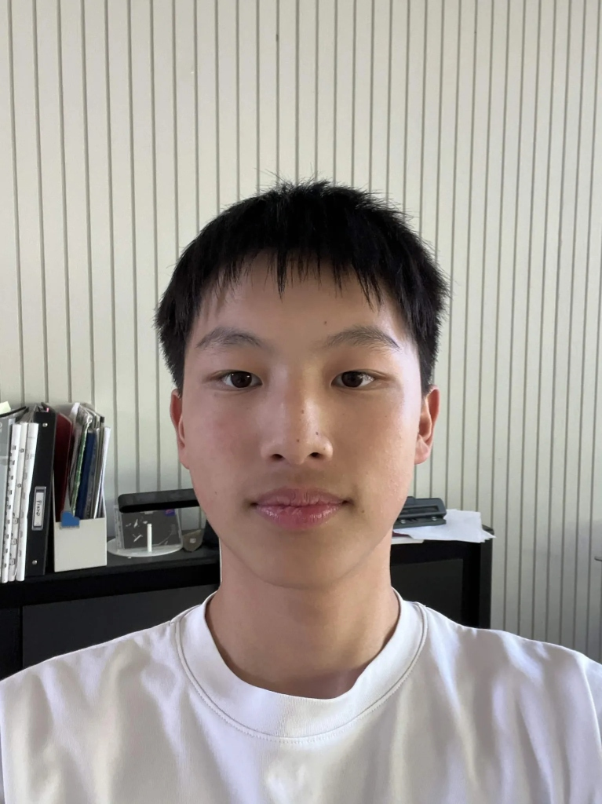

Gavin
Piano
Gavin plays piano.
Gavin has been playing classical piano since he was 5, however, after switching to jazz piano in 7th grade, he has since then fallen in love with the intricate chords, complex harmony, and energetic soloing. His favorite jazz pianist right now is Bud Powell.
Because Tank! has no traditional bassist, the piano carries even more weight than it usually would — a lot of the time Gavin's left hand is holding down the bass line itself, sharing that job with the bass trombone. Covering the low end while comping and soloing on top is one of the things that makes this combo special.
